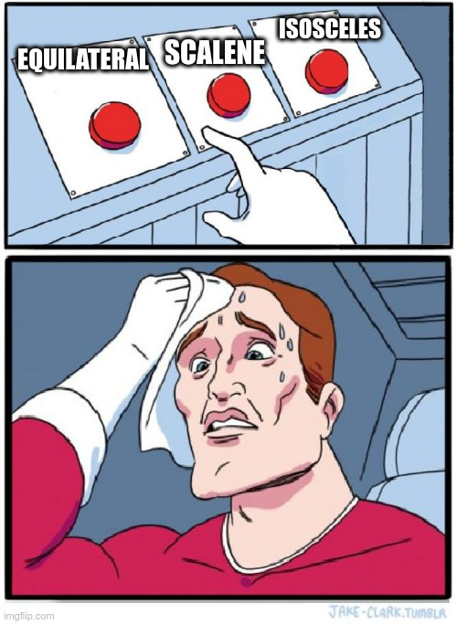
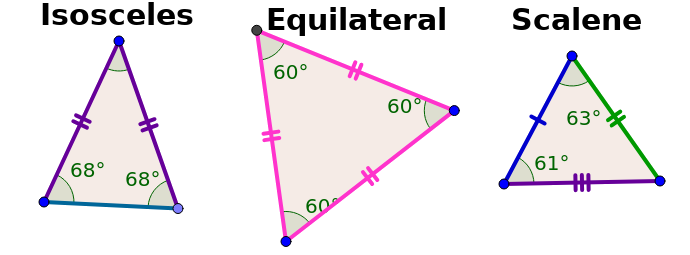

In what concerns the continuous evaluation solving exercises grade during the semester, you should submit until 23:59 of March 10th
(this exercise will still be available for submission after that deadline, but without couting towards your grade)
[to understand the context of this problem, you should read the class #02 exercise sheet]
 Little Emma is in trouble and she needs your help to solve her math homework. She needs to find the type a triangle:

Write a program that, given the lengths of three sides of a triangle, indicates its type: equilateral, isosceles or scalene.
The input consists of one line containing three integers A, B and C, the lengths of the sides of a triangle.
The output should be a single line displaying "equilateral" (if all sides are equal), "isosceles" (two sides are equal) or "scalene" (no sides are equal).
The following limits are guaranteed in all the test cases that will be given to your program:
| 1 ≤ A, B, C ≤ 1 000 000 | Length of a triangle side |
| Example Input 1 | Example Output 1 |
42 42 42 |
equilateral |
| Example Input 2 | Example Output 2 |
23 47 23 |
isosceles |
| Example Input 3 | Example Output 3 |
4 7 2 |
scalene |